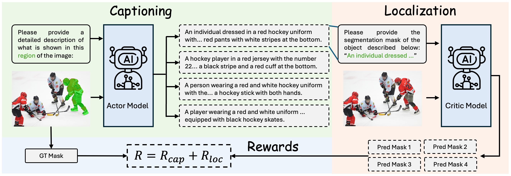
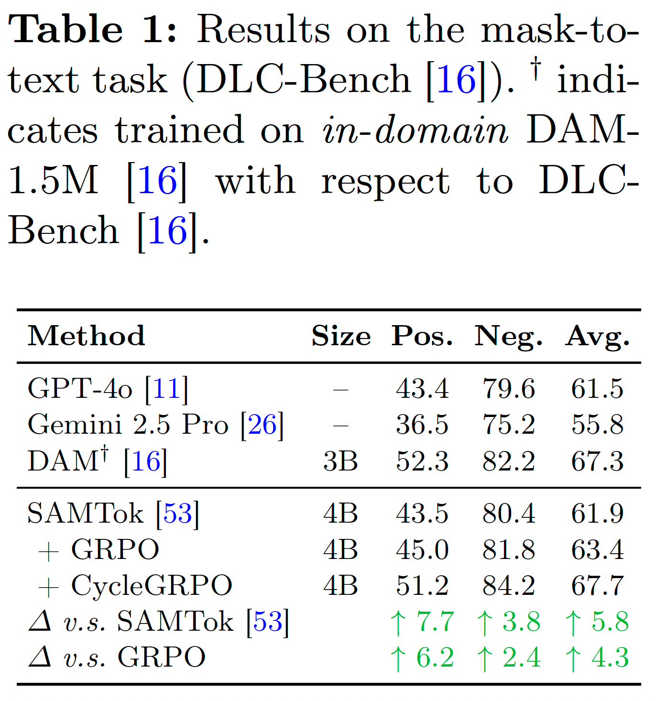
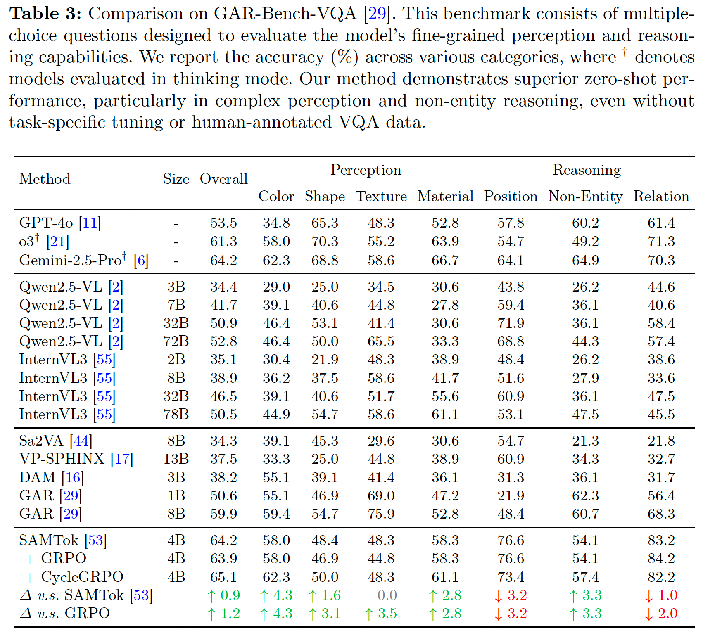
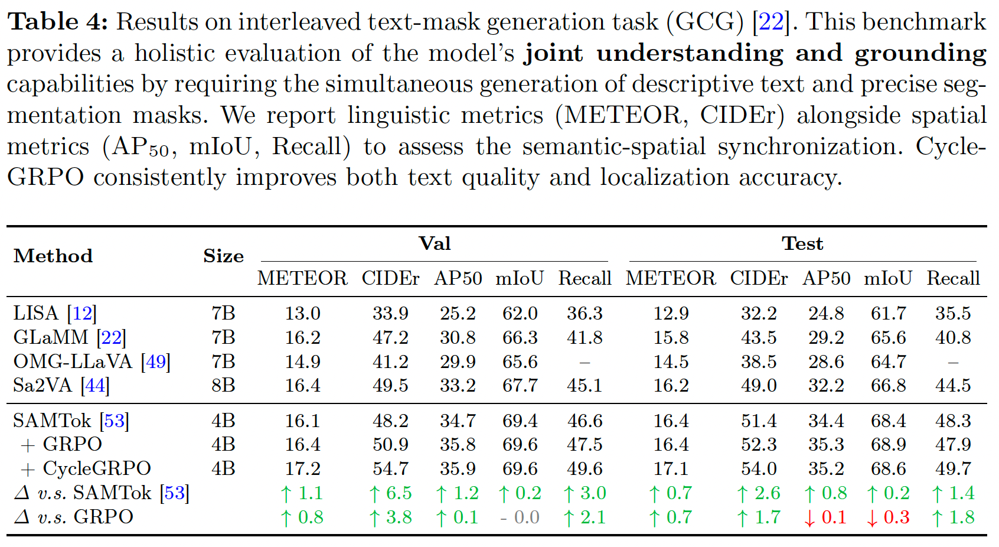
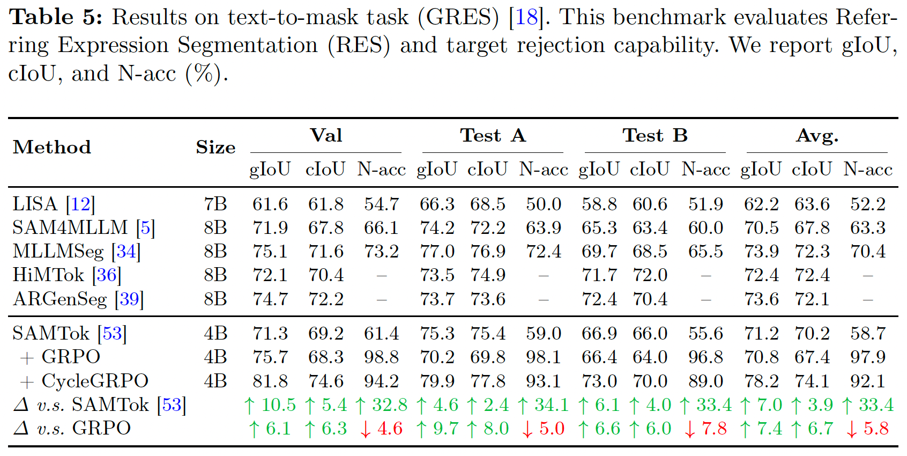
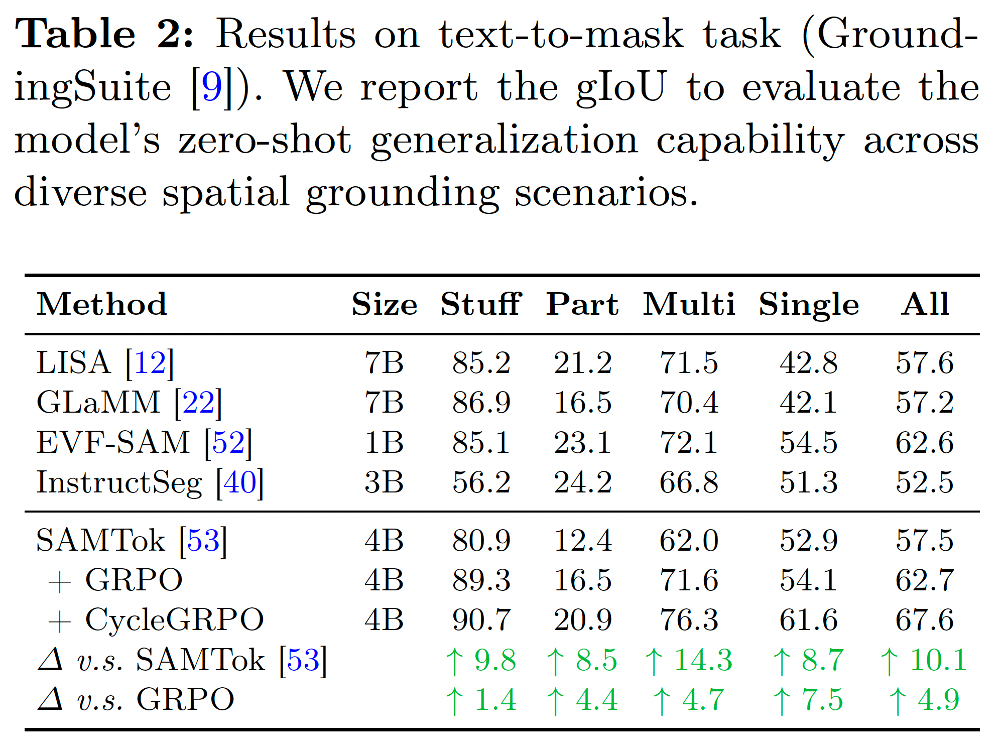
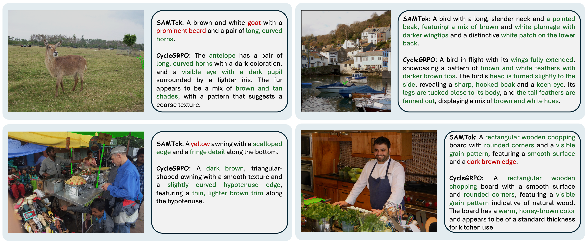
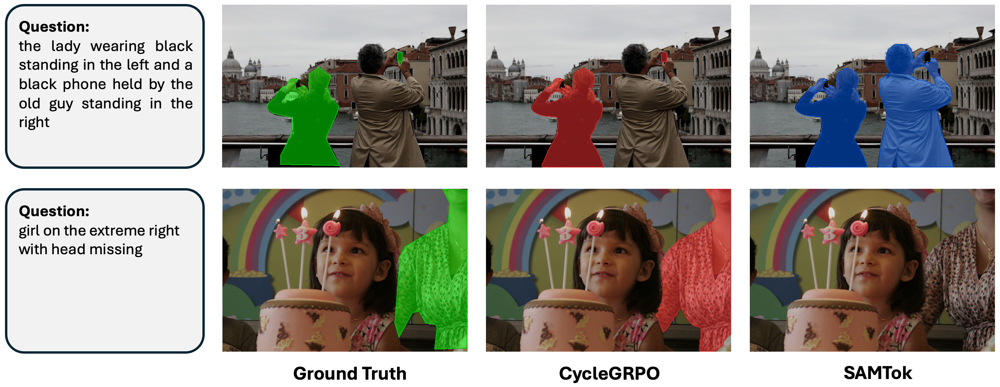
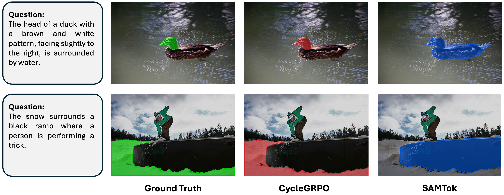

Built on SAMTok (Qwen3-VL-4B) and evaluated without any task-specific fine-tuning, CycleGRPO improves both region understanding and localization across the board over the SAMTok baseline.
We introduce Actor as Its Own Critic, a unified reinforcement learning framework — Cycle GRPO (CycleGRPO) — that jointly optimizes region understanding and localization for Multimodal Large Language Models (MLLMs). Different from existing separated pipelines, we leverage the inherent duality between the two tasks to construct a self-evaluating paradigm: “region → text → region”. A single MLLM first acts as the actor to generate region captions, and immediately transitions into a critic to ground its own generated text back into the spatial domain. Therefore, CycleGRPO requires only region inputs (e.g., masks or bounding boxes), entirely bypassing the need for textual ground truths. A quality-aware token-level cycle-consistency reward assesses the semantic discriminability of captions via their physical localization accuracy. Built upon SAMTok, CycleGRPO bootstraps both capabilities simultaneously and, without any task-specific fine-tuning, yields consistent gains across region captioning, region VQA, grounded dialogue, and referring segmentation — offering a straightforward and scalable way to advance pixel-level capabilities in MLLMs.

Region captioning and localization are dual problems: a genuinely discriminative caption must carry enough unique detail to guide the model back to the exact original region. CycleGRPO instantiates this with a two-phase rollout on a single policy πθ:
A token-level cycle-consistency reward turns the IoU between the original and reconstructed regions into a training signal for both directions: the captioning reward is the mean reconstruction IoU of a caption's grounding paths, and each localization trajectory is weighted by its parent caption's reward. Optimizing this intrinsic, physically-grounded signal with GRPO jointly bootstraps understanding and grounding — no external LLM judge and no caption ground-truth required. The same recipe generalizes from SAMTok mask tokens to plain bounding-box coordinates on vanilla Qwen-VL backbones.
Built on SAMTok (Qwen3-VL-4B) and evaluated without any task-specific fine-tuning, CycleGRPO improves both region understanding and localization across the board over the SAMTok baseline.








Drag or use the arrows to browse — DLC-Bench, GRES, GroundingSuite.
@inproceedings{cyclegrpo2026,
title = {Actor as Its Own Critic: Unifying Region Understanding and
Localization via CycleGRPO},
author = {Zhang, Xin and Wang, Haochen and Zhou, Yikang and Wang, Zhuochen
and Li, Jason and Tan, Robby T.},
booktitle = {European Conference on Computer Vision (ECCV)},
year = {2026}
}